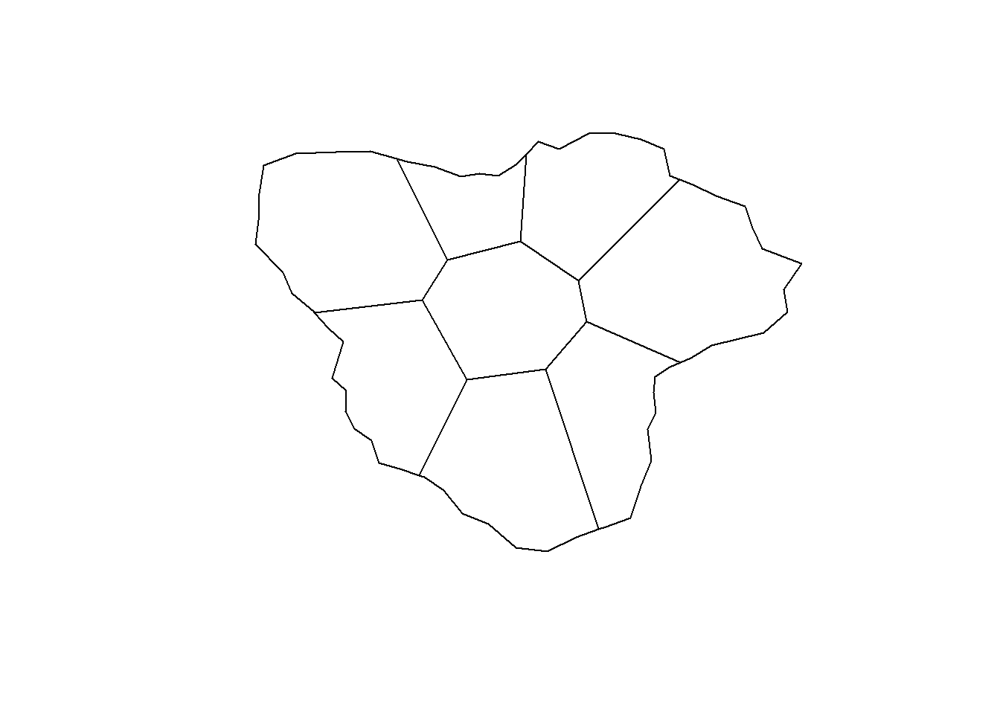
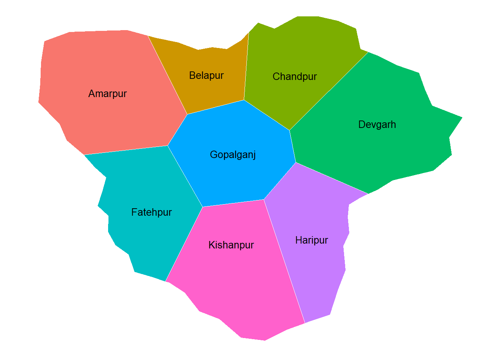
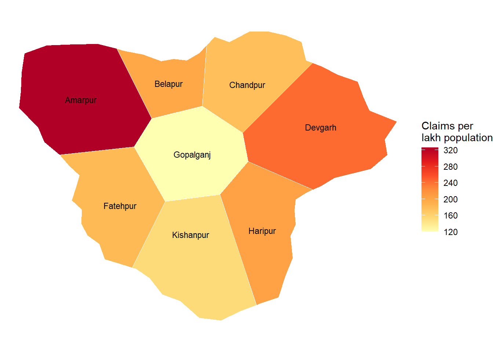
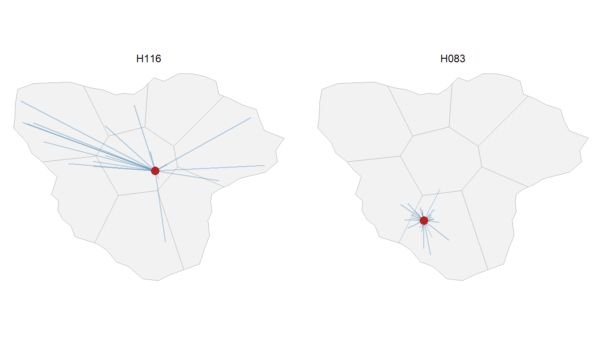
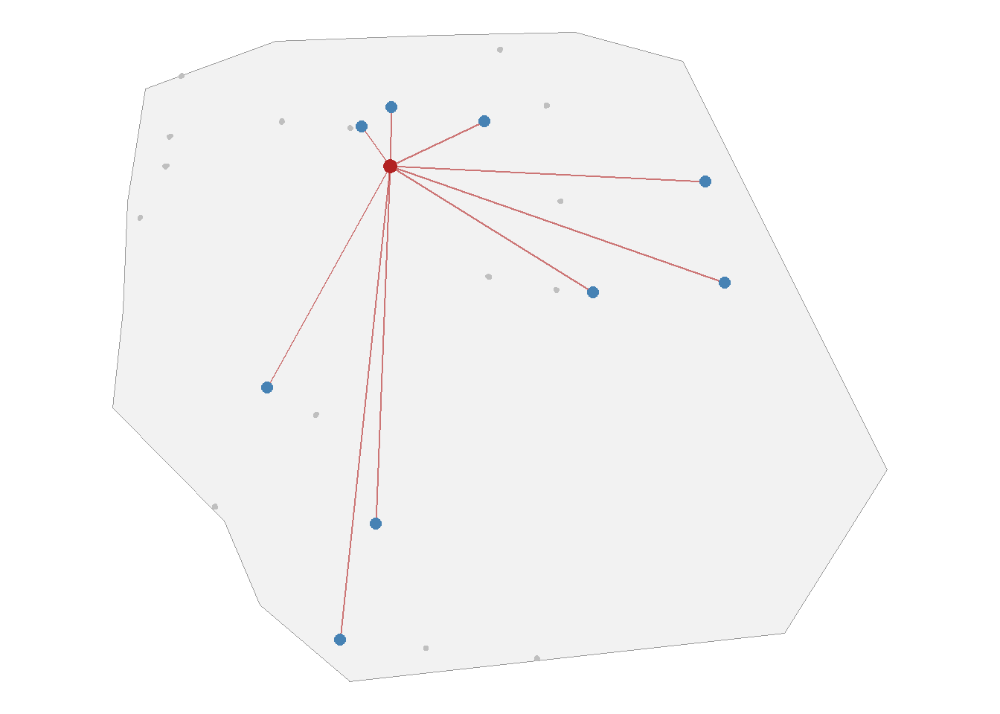
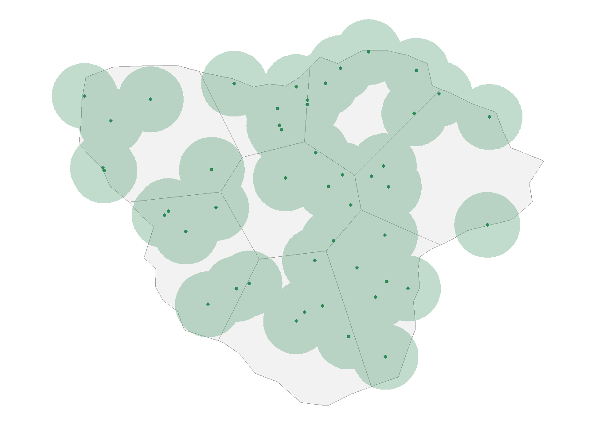

53 Maps
Almost everything that government does happens somewhere. A hospital, a school, a road, a ration shop, a beneficiary’s house. Records usually carry this location, as a district name, a pin code, or increasingly as exact coordinates captured by a mobile phone. When we put such data on a map, patterns appear that no table can show. Which areas are well covered, which are left out, and which records do not fit where they claim to be.
R can work with maps as easily as with tables. In this chapter, we will learn to read map data, draw maps, join data to locations, and measure distances. As always, we will apply each skill to an audit question.
53.1 Where can maps help an auditor?
- Coverage and equity. Are benefits reaching every district, or are some areas left out? A map of beneficiaries per lakh population shows this at a glance.
- Verifying geotagged evidence. Many schemes now require geotagged photos, of houses built, assets created, or inspections done. A photo whose location does not match the claimed site is a red flag.
- Distance checks. Patients travelling unusually far to a hospital, students enrolled in a school far from their homes, or travel claims for distances that do not match the map.
- Location mismatches. A beneficiary recorded in one district but living in another, or a vendor whose address is far from where supplies were delivered.
- Spatial clusters. Many claims, complaints or failures concentrated in one area.
53.2 Basic ideas
53.2.1 Types of map data
Map data comes in two main kinds. Vector data describes features by their shape.
- Points, such as the location of a hospital, a school or a photo.
- Lines, such as roads, rivers or canals.
- Polygons, which are closed shapes, such as the boundary of a district or a plot of land.
Raster data describes the earth as a grid of cells, like a photograph. Satellite images and land-use maps are raster data. In this chapter we will work only with vector data, which is what most audit work needs.
53.2.2 File formats
Vector map data is commonly stored in these formats.
-
Shapefile. The oldest and most common format. A single “shapefile” is really a set of files with the same name and different extensions, such as
.shp(the shapes),.shx(an index),.dbf(the attribute table) and.prj(the coordinate system). All of them must be kept together. If the.shpfile is missing, the shapes are lost. -
GeoPackage (
.gpkg). A modern, single-file format, which can hold several layers. -
GeoJSON (
.geojson). A text format, popular on the web.
53.2.3 Coordinate reference systems
Every location is described by a pair of numbers. But numbers mean nothing unless we know the system they belong to. This system is called the coordinate reference system or CRS.
-
Geographic systems use latitude and longitude, in degrees. The most common one is called WGS 84, used by GPS and mobile phones. Its code is
EPSG:4326. - Projected systems flatten the round earth onto a plane, and use metres or kilometres. Distances and areas are easier to measure in them.
We will learn more about CRS, with real latitudes and longitudes, in the chapter on geocoding. In this chapter, our map uses a simple flat grid in kilometres.
When publishing a map that shows the boundaries of India or its states, use boundaries from an authoritative source, such as those published by the Survey of India, and follow the applicable guidelines. Many freely available world maps show India’s boundaries incorrectly. That is one reason why the examples in this chapter use an imaginary state.
53.3 Prerequisites
The package sf, short for simple features, is the standard tool for vector map data in R. An sf object is simply a data frame with a special column, usually called geometry, that holds the shape of each row. So everything we know about dplyr works on it, and ggplot2 can draw it directly.
53.4 Our data, a map of the imaginary state
We continue with the imaginary Sarvajan Swasthya Yojana (SSY) of the earlier chapters. The scheme runs in an imaginary state, Sarvajan Pradesh, with eight districts. All shapes and locations are made up, and are created by tools/make_ssy_geo_data.R in the book’s repository.
The map is stored in a GeoPackage file. st_layers() lists the layers in it.
st_layers("Data/ssy_map.gpkg")Driver: GPKG
Available layers:
layer_name geometry_type features fields crs_name
1 state Polygon 1 1 unknown
2 districts Polygon 8 2 unknownThere are two layers, the outline of the state and its districts. st_read() reads a layer.
Simple feature collection with 8 features and 2 fields
Geometry type: POLYGON
Dimension: XY
Bounding box: xmin: -18.33555 ymin: -34.67893 xmax: 334.3918 ymax: 235.4182
Projected CRS: +proj=tmerc +lat_0=0 +lon_0=0 +k=1 +x_0=0 +y_0=0 +ellps=WGS84 +units=km +no_defs
district population_lakh geom
1 Amarpur 17.7 POLYGON ((105.5556 153.8889...
2 Gopalganj 29.8 POLYGON ((105.5556 153.8889...
3 Kishanpur 23.8 POLYGON ((118.3333 76.66667...
4 Fatehpur 20.4 POLYGON ((89.1791 127.6866,...
5 Belapur 21.4 POLYGON ((152.7273 165.6818...
6 Chandpur 15.2 POLYGON ((190.5 140.5, 152....
7 Haripur 16.6 POLYGON ((169 83, 195.5519 ...
8 Devgarh 26.9 POLYGON ((195.5519 113.9773...The printout shows that this is an sf object with 8 features (rows), each a polygon. Besides the geom column, it has the district name and its population in lakh. Note the line Projected CRS. Let us check the units of our coordinate system.
st_crs(districts)$units[1] "km"So all coordinates and distances are in kilometres.
53.5 Drawing maps
The quickest way to see an sf object is the base R plot() function. It draws one small map for each attribute column. Here we draw just the geometry, with st_geometry().
plot(st_geometry(districts))
For better maps, we use ggplot2. The geom geom_sf() draws sf objects. It needs no x or y aesthetic, because the geometry column already holds the shapes. geom_sf_text() places a label at the centre of each shape (Figure 53.2).
ggplot(districts) +
geom_sf(aes(fill = district), colour = "white", show.legend = FALSE) +
geom_sf_text(aes(label = district), size = 3.5) +
theme_void()
theme_void() removes the axes and gridlines, which are rarely needed on a map.
53.6 Adding points from a table
Locations often come as plain columns of numbers in a table. Our hospital locations are in a CSV file, with two columns, x_km and y_km.
# A tibble: 3 × 3
hospital_id x_km y_km
<chr> <dbl> <dbl>
1 H001 82.5 144.
2 H002 134. 178.
3 H003 201. 234.To make them map points, we use st_as_sf(). We tell it which columns hold the coordinates, and which CRS they are in. Since these coordinates are on the same grid as our districts, we use the district map’s CRS.
Simple feature collection with 120 features and 5 fields
Geometry type: POINT
Dimension: XY
Bounding box: xmin: -13.85 ymin: -20.9 xmax: 313.91 ymax: 233.8
Projected CRS: +proj=tmerc +lat_0=0 +lon_0=0 +k=1 +x_0=0 +y_0=0 +ellps=WGS84 +units=km +no_defs
# A tibble: 120 × 6
hospital_id hospital_name type district beds geometry
* <chr> <chr> <chr> <chr> <dbl> <POINT [km]>
1 H001 District Hospital… Publ… Amarpur 227 (82.47 144.42)
2 H002 District Hospital… Publ… Belapur 275 (133.76 178.06)
3 H003 District Hospital… Publ… Chandpur 266 (201.44 233.8)
4 H004 District Hospital… Publ… Devgarh 293 (216.7 131.49)
5 H005 District Hospital… Publ… Fatehpur 224 (49.6 113.02)
6 H006 District Hospital… Publ… Gopalga… 262 (181.49 140.53)
7 H007 District Hospital… Publ… Haripur 243 (192.66 69.86)
8 H008 District Hospital… Publ… Kishanp… 208 (153.01 36.12)
9 H009 CHC Amarpur-1 Publ… Amarpur 144 (0 145.71)
10 H010 CHC Amarpur-2 Publ… Amarpur 88 (36.1 197.9)
# ℹ 110 more rowsNow we can draw the hospitals on the map, as another layer (Figure 53.3).
53.7 Joining by location
In ordinary joins, rows are matched by a common value, like a hospital ID. In a spatial join, rows are matched by location. st_join() finds, for each point, the polygon it lies in, and attaches that polygon’s columns.
Our hospital table already has a district column, entered when the hospital was empanelled. A spatial join lets us check whether each hospital really lies in the district recorded against it.
hosp_check <- hosp_sf |>
st_join(districts |> select(district_on_map = district))
hosp_check |>
st_drop_geometry() |>
count(match = district == district_on_map)# A tibble: 1 × 2
match n
<lgl> <int>
1 TRUE 120st_drop_geometry() turns the sf object back into an ordinary data frame, which prints more neatly. Here every hospital lies in its recorded district. In real data, such a check often finds mismatches. Some are errors in entering the district. Others may be beneficiaries or units recorded in one district to claim a benefit available only there.
53.8 A map of claims per lakh population
A choropleth is a map where each area is coloured according to a value. Let us colour each district by the number of claims raised by its hospitals, per lakh population.
First we count claims by the district of the hospital, and join the counts to the district map with an ordinary left_join(). The result is still an sf object, so it can be drawn.
claims <- read_csv("Data/ssy_claims.csv", show_col_types = FALSE)
claims_by_district <- claims |>
left_join(hospitals |> select(hospital_id, district), by = "hospital_id") |>
count(district, name = "claims")
district_map <- districts |>
left_join(claims_by_district, by = "district") |>
mutate(claims_per_lakh = claims / population_lakh)
district_map |>
st_drop_geometry() |>
arrange(desc(claims_per_lakh)) district population_lakh claims claims_per_lakh
1 Amarpur 17.7 5765 325.7062
2 Devgarh 26.9 6536 242.9740
3 Haripur 16.6 3383 203.7952
4 Belapur 21.4 4227 197.5234
5 Fatehpur 20.4 3702 181.4706
6 Chandpur 15.2 2673 175.8553
7 Kishanpur 23.8 3626 152.3529
8 Gopalganj 29.8 3564 119.5973ggplot(district_map) +
geom_sf(aes(fill = claims_per_lakh), colour = "white") +
geom_sf_text(aes(label = district), size = 3) +
scale_fill_distiller(palette = "YlOrRd", direction = 1) +
labs(fill = "Claims per\nlakh population") +
theme_void()
The darker districts in Figure 53.4 have many more claims for their population. This alone is not a finding. A district may have more claims because it has more hospitals, or because patients come to it from other districts. But it shows the auditor where to start asking questions.
Always map rates, like claims per lakh population or beneficiaries per thousand households, rather than raw counts. A map of raw counts mostly shows where more people live. We met the same point while comparing groups in Chapter 49.
53.9 Audit use case 1, how far do patients travel?
Most patients go to a hospital near their home. A hospital whose patients come mostly from far away deserves a closer look. Patients may be brought in by agents, or the claims may be for patients who never visited at all.
For a sample of claims, we have the location of the patient’s home. Let us turn these into points.
[1] 4000st_distance() measures the distance between features. With by_element = TRUE, it measures between the first home and the first hospital, the second home and the second hospital, and so on, instead of between every pair. So we first line up, for each home, the location of its hospital.
hospital_of_home <- hosp_sf[match(homes$hospital_id, hosp_sf$hospital_id), ]
homes <- homes |>
mutate(distance_km = as.numeric(st_distance(homes, hospital_of_home, by_element = TRUE)))
summary(homes$distance_km) Min. 1st Qu. Median Mean 3rd Qu. Max.
0.000 3.809 9.164 17.158 18.573 199.863 st_distance() returns the distances with their units attached. as.numeric() removes the units, so that we can use them like ordinary numbers. Half of the patients live within about 9 km of their hospital. Now let us see, for each hospital, what share of its patients come from more than 50 km away.
# A tibble: 8 × 4
hospital_id patients median_km pct_over_50km
<chr> <int> <dbl> <dbl>
1 H116 21 88.1 71.4
2 H071 19 97 63.2
3 H066 59 81.8 59.3
4 H070 99 77 58.6
5 H063 69 92.6 58
6 H098 26 71.2 57.7
7 H095 15 5.8 6.7
8 H039 60 10.3 6.7We kept only hospitals with at least 15 patients in the sample, to avoid judging a hospital on very few cases. The result is striking. For most hospitals, very few patients come from beyond 50 km. But for a group of six hospitals, more than half do. These are the same six “camp” hospitals that stood out in the chapters on PCA, clustering, association rules and text analytics.
A picture makes the point even more clearly. Let us draw lines from each patient’s home to the hospital, for one of these hospitals and for an ordinary hospital (Figure 53.5).
two_hospitals <- c(travel$hospital_id[1],
travel$hospital_id[travel$pct_over_50km == 0][1])
lines_df <- homes |>
filter(hospital_id %in% two_hospitals) |>
mutate(home_x = st_coordinates(geometry)[, 1],
home_y = st_coordinates(geometry)[, 2]) |>
st_drop_geometry() |>
left_join(hosp_locations, by = "hospital_id") |>
mutate(hospital_id = factor(hospital_id, levels = two_hospitals))
ggplot() +
geom_sf(data = districts, fill = "grey95", colour = "grey70") +
geom_segment(data = lines_df,
aes(x = x_km, y = y_km, xend = home_x, yend = home_y),
colour = "steelblue", alpha = 0.4) +
geom_point(data = lines_df |> distinct(hospital_id, x_km, y_km),
aes(x_km, y_km), colour = "firebrick", size = 3) +
facet_wrap(~hospital_id) +
theme_void()
st_coordinates() extracts the x and y values of points, so that we can use them with ordinary ggplot2 geoms like geom_segment(). The hospital on the left draws its patients from across the state. The one on the right serves its own neighbourhood, as one would expect.
53.10 Audit use case 2, were the inspections really done?
Each empanelled hospital must be inspected twice a year. The inspector uploads a photo from the hospital, and the phone records the location where the photo was taken. This location is called the geotag. If the photo was really taken at the hospital, its geotag should be within a few hundred metres of the hospital.
Simple feature collection with 3 features and 4 fields
Geometry type: POINT
Dimension: XY
Bounding box: xmin: 82.442 ymin: 144.385 xmax: 133.703 ymax: 177.922
Projected CRS: +proj=tmerc +lat_0=0 +lon_0=0 +k=1 +x_0=0 +y_0=0 +ellps=WGS84 +units=km +no_defs
# A tibble: 3 × 5
hospital_id inspection_no inspection_date inspector geometry
<chr> <dbl> <date> <chr> <POINT [km]>
1 H001 1 2024-07-07 INS-01 (82.442 144.426)
2 H001 2 2024-08-27 INS-03 (82.46 144.385)
3 H002 1 2025-03-10 INS-03 (133.703 177.922)As before, we measure the distance from each photo to its hospital.
hospital_of_photo <- hosp_sf[match(inspections$hospital_id, hosp_sf$hospital_id), ]
inspections <- inspections |>
mutate(distance_km = as.numeric(st_distance(inspections, hospital_of_photo,
by_element = TRUE)))
inspections |>
st_drop_geometry() |>
summarise(photos = n(),
median_metres = 1000 * median(distance_km),
over_1km = sum(distance_km > 1))# A tibble: 1 × 3
photos median_metres over_1km
<int> <dbl> <int>
1 240 104. 7Most photos were taken within about 104 metres of the hospital. But some were taken more than a kilometre away. Let us list them.
# A tibble: 7 × 5
hospital_id inspection_no inspection_date inspector distance_km
<chr> <dbl> <date> <chr> <dbl>
1 H010 2 2024-06-11 INS-05 88.7
2 H042 2 2024-04-18 INS-04 87.6
3 H024 2 2025-03-14 INS-03 63.1
4 H109 2 2024-09-11 INS-03 51
5 H084 2 2024-08-08 INS-03 47.1
6 H115 2 2024-04-19 INS-02 32.3
7 H066 2 2024-06-15 INS-05 32.2These photos were taken tens of kilometres from the hospitals they claim to show. The inspections were, most likely, reported without anyone visiting the hospital. The table also shows the inspector and the date of each, which is what an audit observation needs. Two things stand out. One inspector, INS-03, accounts for three of the seven cases, which suggests a pattern in that inspector’s work rather than an odd mistake. And one of the hospitals, H066, is again among the six flagged hospitals of the earlier chapters.
GPS locations on phones can be off by a few metres, sometimes by a few hundred metres in crowded areas or indoors. So never flag a photo for being 50 metres away. Use a sensible threshold, like one kilometre in our case, and look at how far beyond it each case lies. Also remember that geotags can be faked with special apps. A correct geotag does not prove a visit, but a wrong one is a strong sign of trouble.
53.11 Audit use case 3, one house, many beneficiaries
Under rural housing schemes, the final instalment is released when a geotagged photo of the completed house is uploaded. A known fraud is to photograph one completed house again and again, and upload it for several beneficiaries whose houses were never built. Each photo looks genuine, and each has a valid geotag. The trick shows only when we notice that photos of different beneficiaries were taken at almost the same spot.
Let us create the data of 500 beneficiaries in 25 villages of the district Amarpur. For each beneficiary, we have the location of the house site, recorded at the time of sanction, and the geotag of the completion photo. Genuine photos are taken at the house, with a GPS error of about 10 metres. We have planted a group of 10 beneficiaries, from different villages, whose completion photos were all taken at one house. That house belongs to one of the ten. For the other nine, the photo shows someone else’s house.
Code to create the housing data
set.seed(55)
amarpur <- districts |> filter(district == "Amarpur")
# 25 villages inside the district
villages <- st_sample(amarpur, 25) |>
st_coordinates() |>
as_tibble() |>
mutate(village = sprintf("Village-%02d", 1:25))
n <- 500
houses <- tibble(ben_id = sprintf("PH%04d", 1:n),
village = sample(villages$village, n, TRUE)) |>
left_join(villages, by = "village") |>
# houses clustered within about 100 metres of the village centre
mutate(site_x = X + rnorm(n, 0, 0.1),
site_y = Y + rnorm(n, 0, 0.1),
# genuine photos, at the house, with about 10 metres of GPS error
photo_x = site_x + rnorm(n, 0, 0.010),
photo_y = site_y + rnorm(n, 0, 0.010)) |>
select(ben_id, village, site_x, site_y, photo_x, photo_y)
# Planted. Ten beneficiaries of different villages, all photographed at one house
fake <- houses |> distinct(village, .keep_all = TRUE) |> slice(2:11) |> pull(ben_id)
spot <- houses |> filter(ben_id == fake[1])
houses <- houses |>
mutate(photo_x = if_else(ben_id %in% fake, spot$site_x + rnorm(n, 0, 0.004), photo_x),
photo_y = if_else(ben_id %in% fake, spot$site_y + rnorm(n, 0, 0.004), photo_y))head(houses, 3)# A tibble: 3 × 6
ben_id village site_x site_y photo_x photo_y
<chr> <chr> <dbl> <dbl> <dbl> <dbl>
1 PH0001 Village-01 49.5 124. 49.5 124.
2 PH0002 Village-25 26.0 202. 26.0 202.
3 PH0003 Village-15 58.5 182. 26.0 202.Let us turn the photo geotags into points.
st_is_within_distance() finds, for each photo, all photos taken within a given distance of it. Our distances are in kilometres, so 15 metres is 0.015. The result is a list, with one element for each photo, holding the row numbers of the photos near it.
near <- st_is_within_distance(photos, dist = 0.015)
near[1:3][[1]]
[1] 1 123
[[2]]
[1] 2 3 4 5 9 11 12 14
[[3]]
[1] 2 3 4 5 7 8 9 11 12 14Every photo is near itself, so most elements hold just their own row number. To form groups of photos taken at the same spot, we treat each pair of nearby photos as an edge of a network, and find the connected components, as we did in Chapter 52. If photo A is near B, and B is near C, all three fall in one group.
library(igraph)
near_pairs <- tibble(from = rep(seq_along(near), lengths(near)),
to = unlist(near)) |>
filter(from < to)
photo_graph <- graph_from_data_frame(near_pairs, directed = FALSE,
vertices = tibble(id = seq_len(nrow(photos))))
photos$group <- components(photo_graph)$membership
photo_groups <- photos |>
st_drop_geometry() |>
summarise(beneficiaries = n(),
villages = n_distinct(village),
.by = group) |>
filter(beneficiaries > 1) |>
arrange(desc(beneficiaries))
photo_groups# A tibble: 18 × 3
group beneficiaries villages
<dbl> <int> <int>
1 2 10 10
2 189 6 1
3 30 3 1
4 1 2 1
5 5 2 1
6 20 2 1
7 63 2 1
8 78 2 1
9 86 2 1
10 90 2 1
11 117 2 1
12 172 2 1
13 199 2 1
14 206 2 1
15 207 2 1
16 219 2 1
17 253 2 1
18 422 2 1There are 18 groups of photos taken within 15 metres of each other. 17 of them lie entirely within one village, with up to 6 beneficiaries each. These are most likely neighbours, whose houses stand next to each other, which is common in villages. In a crowded lane, house A may be within 15 metres of B, and B of C, so that a whole row of houses forms one group. So the size of a group alone is not the signal. The signal is a group that spans several villages, since houses in different villages cannot be next to each other. One group stands apart. 10 beneficiaries, from 10 different villages, have completion photos taken at the same spot. Figure 53.6 shows where their houses were supposed to be, and where the photos were taken.
same_spot <- photos |>
st_drop_geometry() |>
filter(group == big$group)
ggplot() +
geom_sf(data = amarpur, fill = "grey95", colour = "grey60") +
geom_point(data = houses, aes(site_x, site_y), colour = "grey75", size = 0.6) +
geom_segment(data = same_spot, aes(x = site_x, y = site_y, xend = photo_x, yend = photo_y),
colour = "firebrick", alpha = 0.6) +
geom_point(data = same_spot, aes(site_x, site_y), colour = "steelblue", size = 2.5) +
geom_point(data = same_spot, aes(photo_x, photo_y), colour = "firebrick", size = 3) +
theme_void()
We can also measure, for each beneficiary, how far the photo was taken from the sanctioned site, as we did for the inspections.
# A tibble: 2 × 3
same_spot_group beneficiaries median_metres
<lgl> <int> <dbl>
1 FALSE 490 12
2 TRUE 10 39397Here, on our flat grid in kilometres, the distance is simply the length of the straight line between the two points. Genuine photos were taken a few metres from the house site. The photos of the suspicious group were taken kilometres away from the sites. Both checks point to the same ten beneficiaries.
Use both checks together. The distance from the sanctioned site catches a photo taken at the wrong place. The grouping of photos catches the same house shown for many beneficiaries, even when the sanctioned sites were recorded carelessly. In the field, visit the sites of a sample of the group, and check whether a house exists there at all.
53.12 Buffers
A buffer is the area within a given distance of a feature. st_buffer() draws one. For example, the area within 25 km of every public hospital shows which parts of the state are served by public hospitals (Figure 53.7).
public_cover <- hosp_sf |>
filter(type == "Public") |>
st_buffer(dist = 25) |>
st_union()
ggplot() +
geom_sf(data = districts, fill = "grey95", colour = "grey60") +
geom_sf(data = public_cover, fill = "seagreen", alpha = 0.3, colour = NA) +
geom_sf(data = hosp_sf |> filter(type == "Public"), colour = "seagreen", size = 1) +
theme_void()
st_union() merges the overlapping circles into one shape. Areas outside the green shading are more than 25 km from any public hospital. In a performance audit of health services, such a map can show gaps in coverage.
53.13 A suggested workflow
- Get the map layers you need, from an authoritative source, and check that all parts of each file are present.
- Check the CRS of every layer. Use a projected CRS in metres or kilometres for distances and areas.
-
Turn location columns into points with
st_as_sf(). -
Check locations against recorded areas with
st_join(). -
Map rates, not counts, with
geom_sf(). -
Measure distances with
st_distance(), and look for records that are unusually far from where they should be. - Set sensible thresholds, allowing for GPS error.
- Verify each flagged case with records and, where needed, a field visit.
A map is a powerful way to show a finding, but it is easy to mislead with it. Large areas catch the eye even when few people live there. Colours can exaggerate small differences. Make sure the map shows exactly the point you want to make, and that the numbers behind it are right.
53.14 Summary of functions used
| Function | Package | What it does |
|---|---|---|
st_layers(), st_read()
|
sf | Lists and reads layers from a map file |
st_crs() |
sf | Shows the coordinate reference system |
st_as_sf(coords = , crs = ) |
sf | Turns x and y columns into map points |
geom_sf(), geom_sf_text()
|
ggplot2 | Draws sf objects and labels them |
st_join() |
sf | Joins by location, such as point in polygon |
st_drop_geometry() |
sf | Turns an sf object back into a plain data frame |
st_distance(by_element = TRUE) |
sf | Distance between matching pairs of features |
st_coordinates() |
sf | Extracts x and y values of points |
st_buffer(), st_union()
|
sf | Area within a distance, and merging shapes |
scale_fill_distiller() |
ggplot2 | Colour scale for choropleth maps |